REDES · curso 2
5. Capa de Enlace · REDES
Escrito por Adrián Quiroga Linares.
5.1 Introducción
La capa de enlace es la segunda capa del modelo OSI y se encarga de gestionar la transmisión de datos entre nodos directamente conectados en una red. Su propósito principal es asegurar que los datos se transfieran de forma confiable a través de un enlace físico entre los extremos de una conexión.
- Nodos: hosts origen y destino y los routers
- Enlaces: LANs o redes punto a punto
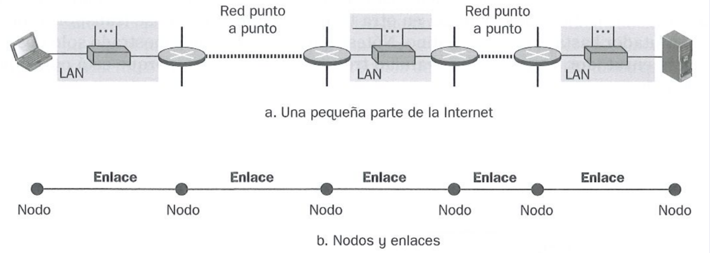
El objetivo principal de esta capa en transmitir bloques de bits de un lado a otro. La capa de enlace organiza los datos en unidades manejables llamadas tramas (frames o marcos), las cuales encapsulan información del nivel superior junto con metadatos para su correcta transmisión y recepción.
La unidad de medida o PDU (Protocol Data Unit) de la capa de enlace es la trama. Esta incluye:
- Cabecera (header): contiene información de control, como direcciones físicas y mecanismos de detección de errores.
- Datos (payload): la información útil.
- Cola (trailer): bits adicionales usados para la detección y corrección de errores.
La capa de enlace se implementa generalmente en la tarjeta de red del dispositivo. El sistema operativo transfiere los datos al adaptador de red. Este adaptador añade la cabecera y envía las tramas al medio físico.
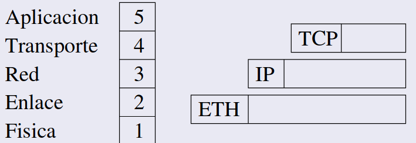
Encontramos dos tipos de enlaces:
- Punto a Punto: Enlace directo entre un emisor y un receptor (un único par de dispositivos).
- Difusión: Un medio compartido donde múltiples emisores y receptores pueden comunicarse (ejemplo: redes Ethernet).
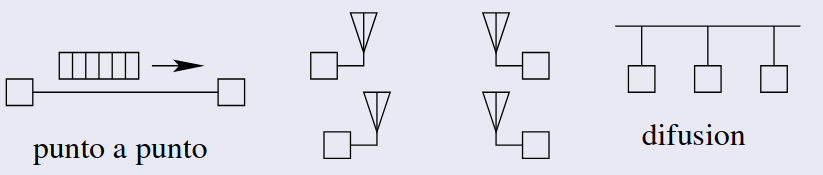
Los protocolos en esta capa definen el formato de las tramas y las acciones a realizar cuando un nodo envía o recibe tramas. La capa de red encapsula los datos de las capas superiores en tramas, delimitando dónde empieza y termina cada trama. Controla el acceso al medio físico mediante protocolos de acceso múltiple (MAC), esenciales en medios compartidos. Asegura que las tramas lleguen al receptor mediante confirmaciones y retransmisiones si es necesario. Regula la velocidad de envío para evitar saturar al receptor. Utiliza técnicas avanzadas para identificar errores en los datos causados por interferencias electromagnéticas o ruido en la señal. Repara errores detectados mediante mecanismos integrados en hardware o software. Especifica el modo de Transmisión: - Half-Duplex: Transmisión en un solo sentido a la vez. - Full-Duplex: Transmisión simultánea en ambos sentidos.
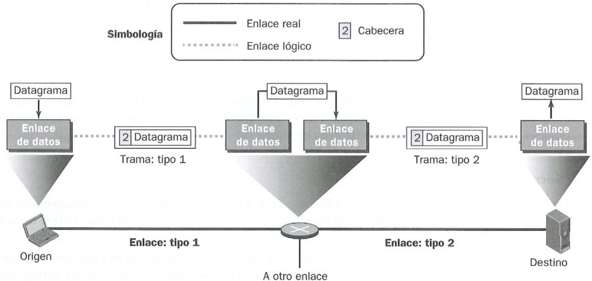
Recordatorio

5.2 Modelo IEEE 802
El modelo IEEE 802 define estándares para redes de área local (LANs) y redes de área metropolitana (MANs). Este modelo organiza la capa de enlace en dos subcapas principales para manejar la comunicación y garantizar la interoperabilidad entre dispositivos de diferentes fabricantes.
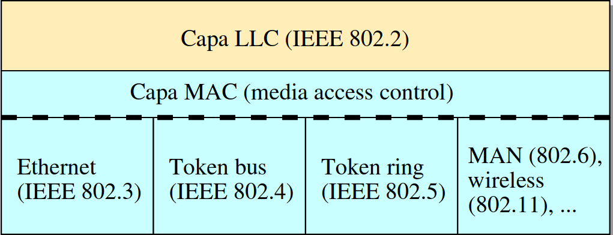
## 5.2.1 LLC (Control de Enlace Lógico) La **capa LLC** actúa como una interfaz entre las capas superiores (como la capa de red) y la subcapa MAC. Se encarga del **control de errores y de flujo**.Sin conexión ni confirmaciones:
- No verifica que los datos lleguen correctamente.
- No hay control de flujo ni control de errores.
- Las capas superiores son responsables de gestionar problemas como retransmisiones. Sin conexión con confirmaciones:
- Confirma la recepción de las tramas individuales.
- No establece una conexión previa (es decir, no asegura que haya una sesión de comunicación predefinida). Con conexión y confirmaciones:
- Establece una conexión lógica antes de la transmisión.
- Asegura el control de flujo y la detección/corrección de errores.
5.2.2 MAC (Control de Acceso al Medio)
La capa MAC es responsable de ensamblar los datos en tramas (frames) y gestionar el acceso al medio físico compartido. Especifica cómo los dispositivos en una red comparten el medio de transmisión y garantiza que las tramas lleguen al destino correcto.
Maneja la transmisión en medios compartidos, controlando quién puede enviar en cada momento (evita colisiones). Detecta y corrige errores en las tramas cuando sea posible. Desensambla las tramas en el receptor, verificando las direcciones y detectando errores.
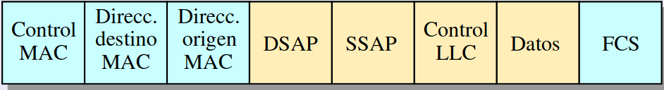
5.2.3 Relación Entre LLC y MAC
La subcapa LLC es independiente de la tecnología del medio físico. Esto significa que los mismos mecanismos de control de flujo y errores pueden usarse sobre cualquier tecnología subyacente. La subcapa MAC, en cambio, está directamente relacionada con el medio de transmisión y varía según el tipo de red: - Ethernet tiene sus propias reglas para el acceso al medio, diferentes de las usadas en Token Ring o Wi-Fi. Un LLC puede trabajar con múltiples MACs, lo que hace al modelo IEEE 802 modular y flexible.
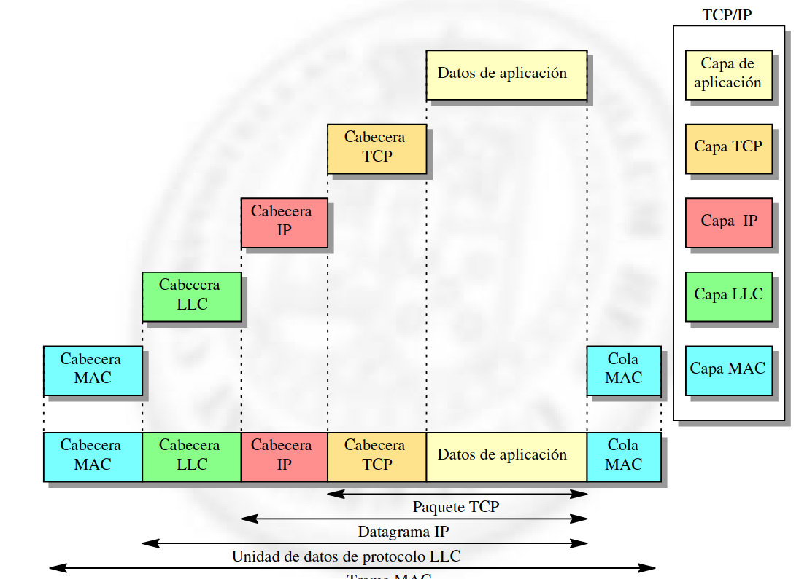
5.3 Direcciones MAC Ethernet
La arquitectura de redes combina diferentes tipos de direcciones para identificar dispositivos y facilitar la comunicación. En este contexto, las direcciones MAC y las direcciones IP desempeñan roles complementarios. La dirección MAC (Media Access Control) es un identificador único asignado a cada adaptador de red o interfaz de red. Es una dirección física, grabada generalmente en la memoria ROM del adaptador Ethernet durante su fabricación.
Tiene una longitud de 6 bytes expresados en hexadecimal. Ejemplo: 00:1A:2B:3C:4D:5E.
Para garantizar que las direcciones no se repitan:
- Los primeros 3 bytes (24 bits) representan un OUI (Organizationally Unique Identifier), asignado al fabricante por la IEEE.
- Los últimos 3 bytes (24 bits) son asignados por el fabricante para identificar de forma única cada dispositivo.
Se puede pensar que la IP indica la dirección física de un dispositivo (la cual puede cambiar) y la MAC es como su DNI (no cambia). Direcciones especiales:
-
Unicast: Se usa para identificar un único dispositivo en la red. Una trama con una dirección unicast de destino es procesada solo por el dispositivo cuyo adaptador tiene esa dirección MAC.
-
Broadcast: Direcciones con todos los bits en 1 (
FF:FF:FF:FF:FF:FF). Se utilizan para enviar tramas a todos los dispositivos de una red local. -
Multicast: Direcciones en las que el bit menos significativo del primer byte es
1. Permite enviar tramas a un grupo específico de dispositivos en la red. -
Modo promiscuo: En este modo, un adaptador puede aceptar todas las tramas, independientemente de su dirección de destino. Útil para herramientas de diagnóstico y análisis de redes, como los analizadores de paquetes (sniffers). Puede activarse manualmente con comandos como
ifconfig eth0 promisc.
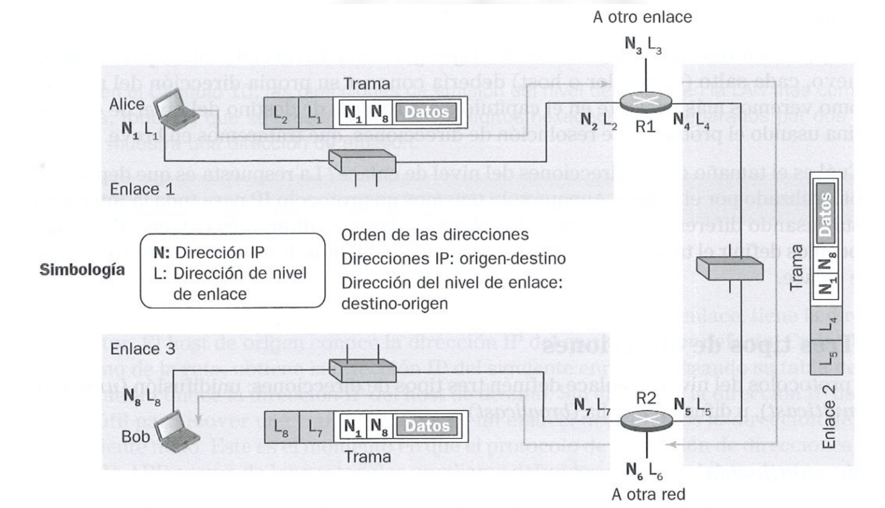
> [!Importante] > **Podemos ver que la IP no cambia a lo largo del recorrido, pero la MAC address sí.**5.3.1 Protocolo ARP (Address Resolution Protocol)
El protocolo ARP es esencial para traducir las direcciones IP, que son lógicas y funcionan en la capa de red, a direcciones MAC, necesarias en la capa de enlace para la transmisión física de datos.
Cuando un dispositivo necesita enviar datos a una dirección IP, primero consulta la tabla de caché ARP para verificar si ya tiene la dirección MAC correspondiente. Si la entrada existe, se utiliza directamente. Si la dirección IP no está en la tabla, se envía una solicitud ARP a través de la red local usando una trama de broadcast. Ejemplo: "¿Quién tiene la dirección IP 192.168.1.10?". **Después viene la respuesta ARP donde el dispositivo con la dirección IP indicada responde con su dirección MAC en una trama . Ejemplo: "192.168.1.10 está en la dirección MAC 00:1A:2B:3C:4D:5E. Finalmente actualiza la tabla, la dirección MAC recibida se almacena en la tabla de caché ARP para uso futuro. Las entradas en la caché tienen una duración limitada (por defecto, 15 minutos).
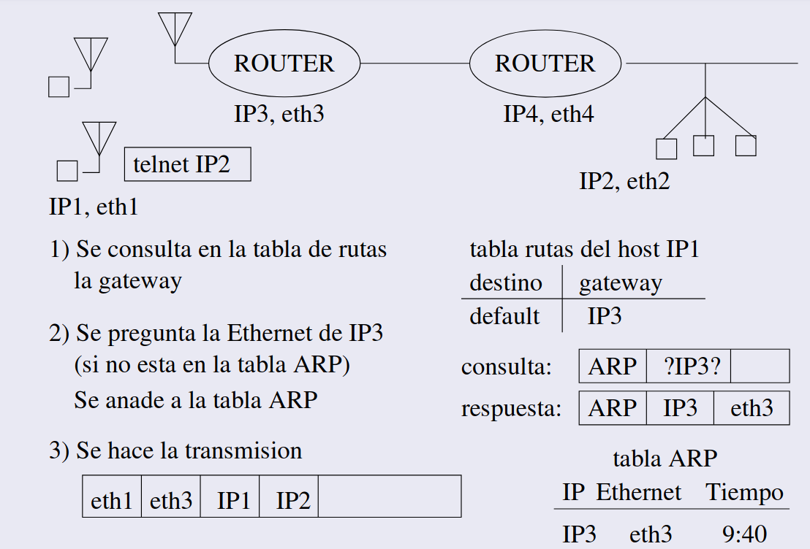
# 5.4 Ethernet Ethernet es un estándar ampliamente utilizado para redes LAN (Local Area Network). Su simplicidad y versatilidad lo han convertido en el tipo de red más común. Se caracteriza por ser una red **de difusión** y proporcionar un servicio **no fiable**, lo que significa que no garantiza la entrega de datos, dejando el control de errores a capas superiores (como TCP). ## 5.4.1 Formato de la trama Ethernet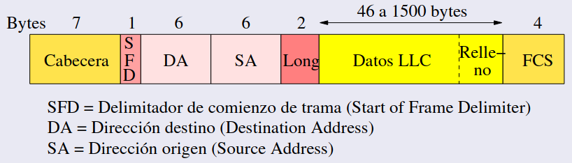
Cabecera tiene 7 bytes con el patrón 10101010 repetido. Permite sincronizar al receptor con el emisor. Además tiene el SFD (Start of Frame Delimiter) 1 byte con el patrón 10101011. Indica el inicio de la trama.
Longitud del campo de datos (2 bytes) (En Ethernet DIX, campo de Tipo, indica el protocolo de red usado (IP o ARP)) Relleno: para que la trama tenga un tamaño mínimo. Tamaño mínimo (sin cabecera ni SFD): 64 bytes = 512 bits Tamaño máximo: 1518 bytes = 12144 bits. FCS (Frame Check Sequence): código CRC de 4 bytes
5.4.2 Difusión y control de acceso: CSMA/CD
Ethernet utiliza el protocolo CSMA/CD (Carrier Sense Multiple Access with Collision Detection), un método para gestionar el acceso al medio compartido.
Todos los adaptadores conectados a la red están constantemente escuchando el medio. Antes de transmitir, el adaptador verifica si el medio está ocupado. Si el medio está libre, comienza a transmitir y si el medio está ocupado, espera a que quede libre y deja un intervalo de seguridad antes de intentar transmitir.
Se pueden producir colisiones en el medio. Una colisión ocurre cuando dos nodos transmiten al mismo tiempo y sus señales se superponen en el medio. Ethernet, al ser una red de difusión, es susceptible a estas colisiones.
El nodo transmisor escucha el medio mientras transmite. Si detecta una colisión (señal alterada), detiene la transmisión. Existe un período en el que un nodo puede creer que el medio está libre mientras otra señal está en tránsito. Para evitar esto:
Nota
Cuando se detecta una colisión termina de transmitir la cabecera de la trama. Al detectar una colisión, el nodo transmite una secuencia de 32 bits conocida como secuencia de interferencia (jamming sequence), para garantizar que todos los nodos detecten la colisión. Detiene la transmisión y usa el algoritmo de espera exponencial binaria:
Divide el tiempo en ranuras de longitud proporcional a
- El nodo espera un tiempo aleatorio de
o antes de reintentar. **Colisiones subsecuentes: ** - El tiempo de espera aumenta exponencialmente:
- Segunda colisión:
. - Hasta 10 colisiones: 0 hasta
.
- Segunda colisión:
Nota
El intervalo es [0,
Límite de reintentos:
- Tras 16 colisiones consecutivas, el nodo desiste e informa del fallo. Y las capas superiores se encargan de recuperar el fallo.
5.4.3 Ventajas y desventajas de Ethernet
| Ventajas | Desventajas |
|---|---|
| Es sencillo y económico de implementar. | No garantiza la entrega de datos (no fiable). |
| Ofrece alta velocidad y escalabilidad. | Sensible a colisiones en entornos congestionados. |
| Es compatible con múltiples medios físicos. | El rendimiento decrece con un gran número de nodos. |
Ethernet ha evolucionado desde sus primeras versiones para soportar redes más rápidas, confiables y eficientes, adaptándose a entornos modernos gracias a tecnologías como Ethernet full-duplex y switches que eliminan las colisiones.
5.5 Tecnologías Ethernet
5.5.1 Repetidores
Los repetidores son dispositivos de la capa física del modelo OSI que trabajan exclusivamente a nivel de bits individuales. Su función principal es extender la distancia de transmisión copiando y regenerando los bits que reciben por una interfaz y enviándolos al resto de interfaces conectadas. Se usan en transmisiones largas.
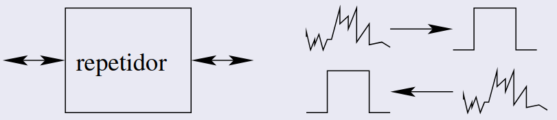
5.6.2 Topología Bus (Obsoleta)
Esta fue una de las primeras configuraciones utilizadas en redes Ethernet.
Consiste en un bus único de cable coaxial al que se conectan los adaptadores mediante conectores T. En cada extremo del bus, hay terminadores para evitar reflexiones de señal. Los adaptadores transmiten y reciben señales eléctricas a través del cable.
Soporta un número limitado de adaptadores por segmento. No permite más de 4 repetidores entre extremos.La distancia máxima está definida por la especificación del estándar utilizado.
Nomenclatura: El formato de las denominaciones sigue este patrón: Mbps, tipo de transmisión, centenas de metros:
10Base2:
- Velocidad de 10 Mbps.
- Banda base (sin modulación).
- Segmentos de hasta 200 metros.
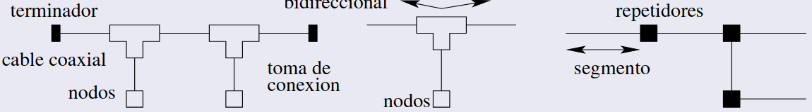
5.6.3 Topología Estrella
Es la configuración predominante en redes Ethernet modernas. Cada nodo está conectado mediante un par trenzado o fibra óptica a un dispositivo central (hub o conmutador | switch). La comunicación entre nodos siempre pasa a través de este dispositivo central.
Cada nodo usa par trenzado (limitado a 100m) o fibra óptica. Para velocidades superiores a 1000 Mbps, requiere 4 pares trenzados.
Nomenclatura: T: Par trenzado. F, S, L, E: Fibra óptica.
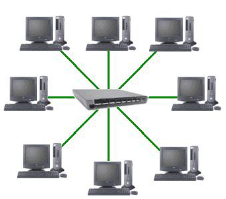
5.6.4 Hubs (Concentradores)
Un hub es un dispositivo simple que también opera en la capa física del modelo OSI. Regenera y retransmite los bits que recibe por una interfaz a todas las demás interfaces. No distingue entre las tramas que transmite, lo que puede generar colisiones si dos adaptadores transmiten simultáneamente. Han quedado obsoletos y han sido reemplazados por dispositivos más avanzados como switches.
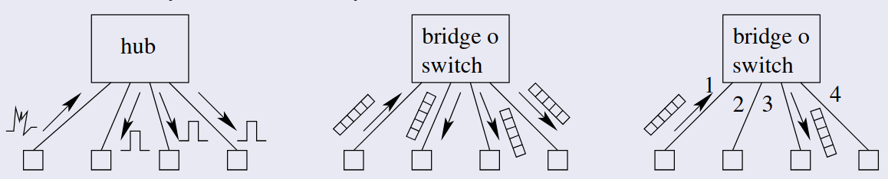
5.6.5 Bridges (Puentes) y Switches (Conmutadores)
Los bridges y switches operan en las capas física y de enlace. Su objetivo principal es procesar tramas Ethernet, filtrar tráfico y evitar colisiones.
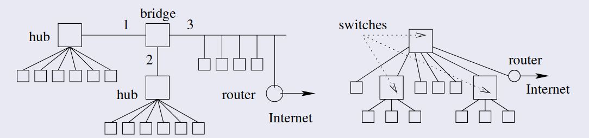
Los bridges tienen pocas interfaces (generalmente 2 o 4). Ya no se utilizan en redes modernas. Los Switches soportan decenas de interfaces. Reemplazaron a los bridges debido a su mayor capacidad.
Inspeccionan campos como la dirección destino para decidir el reenvío. Detectan y descartan tramas con errores. Gestionan el tráfico en interfaces ocupadas almacenando tramas temporalmente.
Construyen una tabla de reenvío dinámica. La tabla almacena la dirección MAC, la interfaz asociada y el tiempo de última actualización. Inicialmente, la tabla está vacía, y el dispositivo recurre a difusión.
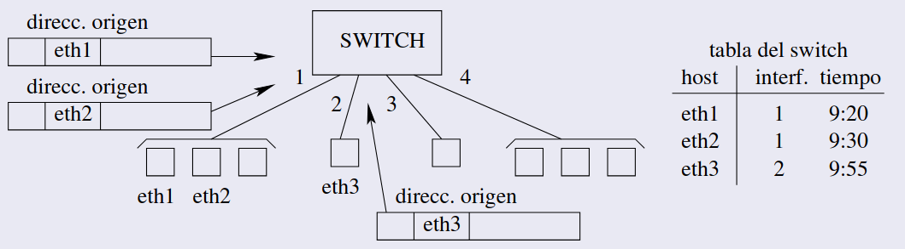
Si la dirección de destino está en la tabla, la trama se reenvía únicamente por la interfaz correspondiente, evitando colisiones y mejorando la eficiencia. Si la interfaz origen coincide con la de destino, se filtra la trama (se elimina). Si no está en la tabla el switch utiliza difusión para localizar al adaptador.
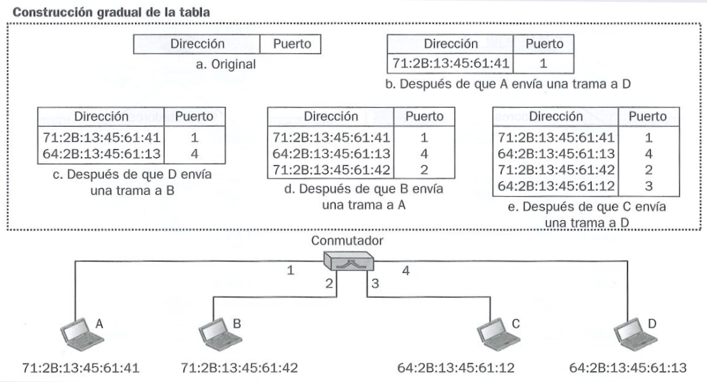
5.7 VLANs (Redes de Área Local Virtuales)
Anteriormente las redes institucionales, cada switch formaba una red LAN propia, pero esto tenía varios inconvenientes:
- Si un usuario se cambia físicamente de departamento, no podía seguir conectado al anterior. Solo hay un dominio de broadcast único (para tramas de mensajes ARP o DHCP).
- Solo hay un dominio de broadcast único (para tramas de mensajes ARP o DHCP).
- Uso ineficientes de los switches (cada uno solo tenía unos pocos puertos).
Por lo que si en una empresa la red va aumentando vamos a tener que comprar más y más switches y es prácticamente imposible aprovechar todos los puertos de esta forma, por lo que además de añadir complejidad innecesaria a la red se añade un costo económico inasumible (tener en cuenta que cada switch se va a conectar a un router y pasar ese cable de ethernet de un piso a otro del edificio es caro).
Estos problemas se abordan con switches compatibles con VLANs, que soporten el estándar IEE 802.1Q (añade unos campos a la cabecera). Estos switches permiten definir múltiples LANs virtuales sobre una única red fija. Los host de una VLAN se comunican entre si como si solo ellos (y ningún otro host) estuvieran conectados al switch.
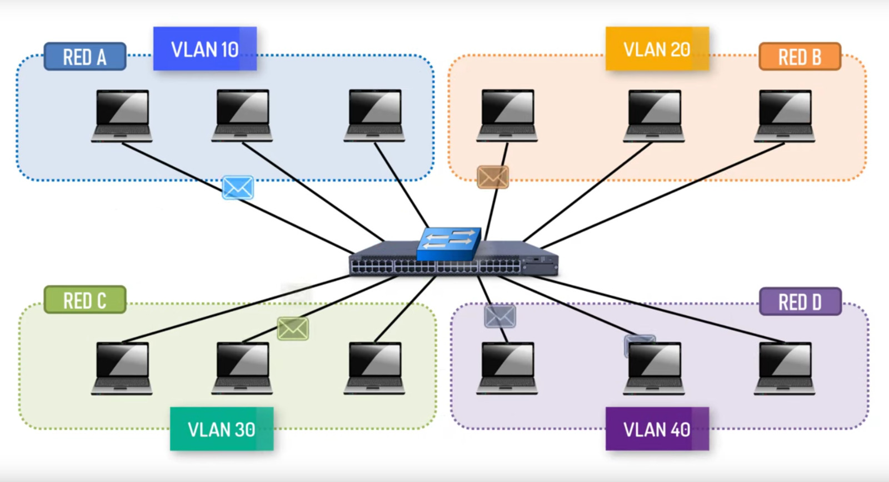
En una VLAN basada en puertos, el administrador de la red divide los puertos (interfaces) del switch en grupos. Cada grupo constituye una VLAN. Se mantienen una tabla de puertos - VLAN. Solo se entregan tramas entre puertos de la misma VLAN.
Si se produce el caso anterior de que un usuario cambia físicamente e departamento, solo hay que actualizar la tabla de puertos para que ahora otro puerto pase a formar parte del VLAN de ese departamento.
Conseguimos:
- Aislamiento del tráfico: solo se entregan tramas entre puertos de la misma VLAN.
- Pertenencia dinámica: asignación dinámica de puertos a VLANs (se establece en que VLAN se sitúa automáticamente). Por ejemplo, un empleado que se conecta al puerto de red en el área de finanzas podría ser asignado automáticamente a la VLAN de finanzas, mientras que un invitado conectado a la red Wi-Fi se podrías asignar a una VLAN asilada para invitados.
- Reenvío entre VLANs mediante encaminamiento: en la práctica se combinan routers y switches.
5.8 Conmutación de etiquetas multiprotocolo (MPLS)
La conmutación de etiquetas multiprotocolo es un mecanismo de transporte de datos. Opera entre la capa de enlace de datos y la capa de red del modelo OSI. Fue diseñado para unificar el servicio de transporte de datos para las redes basadas en circuitos virtuales y en redes de datagramas. Puede ser utilizado para transportar diferentes tipos de tráfico.
Recodatorio
Las redes de circuitos virtuales son un modelo de transmisión de datos, en las cuales se establece un camino lógico entre el emisor y el receptor antes de que los datos se transfieran.
MPLS busca un enfoque diferente intentando juntar la red de circuitos virtuales cuando sea posible (etiquetando selectivamente los datagramas y permitiendo a los routers el reenvío de estos datagramas en base a etiquetas de longitud fija), pero también utilizando los datagramas (direccionamiento y encaminamiento IP)
Así se logró mezclar de forma efectiva las técnicas de circuitos virtuales de una red de datagramas enrutados.
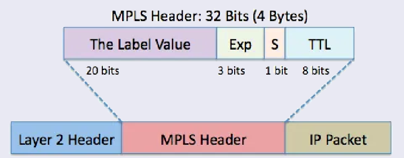
Exp: bits experimentales, relacionados con la QoS. S: stack, vale 1 si es la última etiqueta de la jerarquía.
Una trama ampliada MPLS solo se puede intercambiar entre routers compatibles con MPLS.
5.8.1 Routers de conmutación de etiquetas
Los routes compatibles con MPLS cuando reciben una trama:
- Analiza la etiqueta MPLS en vez de revisar toda la dirección IP
- Consultan una tabla de conmutación de etiquetas para decidir como reenviar el paquete.
- No tocan para nada la cabecera IP.
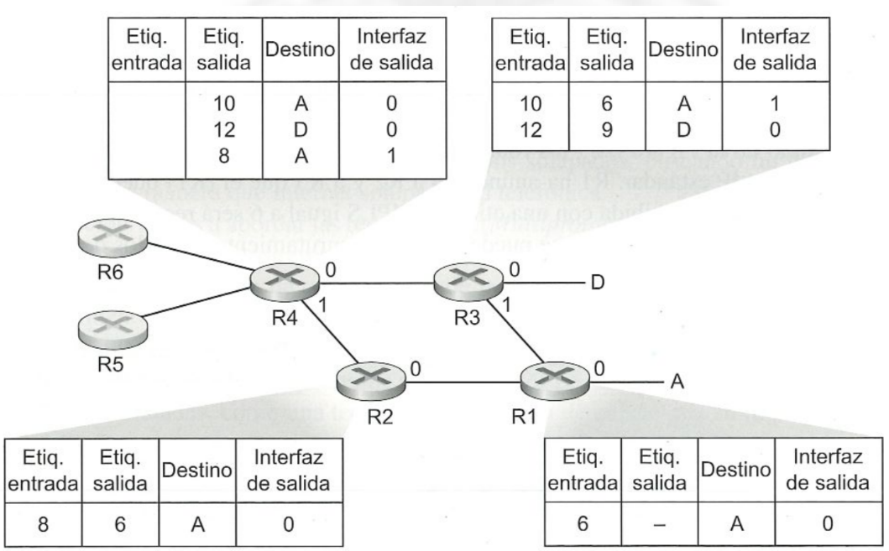
5.8.2 Cálculo de rutas entre routers compatibles con MPLS
Para calcular este tipo de rutas se utiliza una extensión de algoritmos como OSPF(open shortest path first). Cada fabricante utiliza el algoritmo que quiera.
5.8.3 Cálculo de rutas entre routers compatibles con MPLS
- Ingeniería de tráfico: El direccionamiento IP siempre nos intenta dar la ruta más corta, en cambio MPLS proporciona la capacidad de reenviar paquetes a través de rutas que no serían posibles utilizando los protocolos de enrutamiento IP estándar. Se puede anular en enrutamiento IP normal y forzar a que aparte del tráfico dirigido hacia un cierto destino tome una determinada ruta, mientras que el resto del tráfico dirigido siga rutas distintas.
- Establecer VPNs
- Aislar tanto los recursos como el direccionamiento empleados por la VPN del cliente con respecto a los de otros usuarios que también tenga que atravesar la red del ISP.
5.9 WLAN
WLAN significa red de área local inalámbrica y se basa en el estándar IEEE 802.11, que define cómo se comunican los dispositivos inalámbricos (como routers, móviles, laptops, etc.) usando Wi-Fi.
El estándar 802.11 tiene varias versiones (b, a, g, n, etc.), y cada una mejora aspectos como la velocidad, el alcance, y la resistencia a interferencias.
5.9.1 Redes Ad-hoc
Se crean directamente entre dispositivos sin necesidad de un punto de acceso (Access Point, AP). Son redes temporales y de igual a igual (peer-to-peer). Solo funcionan mientras los dispositivos están dentro del radio de alcance.
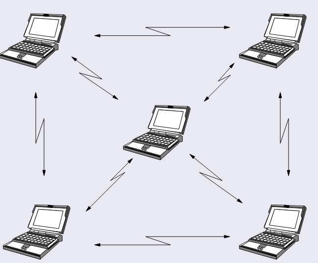
5.9.2 Redes distribuidas (Managed)
Utilizan puntos de acceso (Access Points, AP) conectados a una LAN cableada. AP conecta a los dispositivos inalámbricos dentro de su radio y los comunica con la LAN troncal. Se usan en redes Wi-Fi gestionadas, como en oficinas o en casa con routers Wi-Fi.
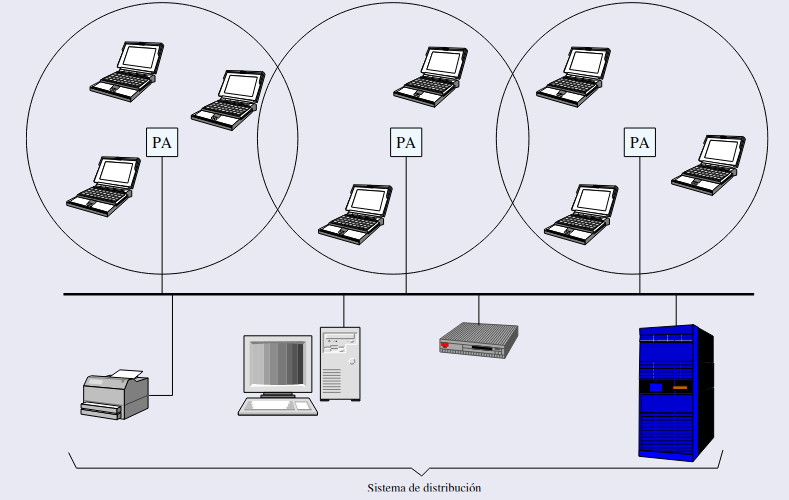
5.9.3 Protocolo de Acceso al Medio (MACA)
MACA (Multiple Access with Collision Avoidance) o CSMA/CA es el protocolo que evita colisiones en redes inalámbricas (donde no se pueden detectar colisiones como en Ethernet). Así funciona:
Un dispositivo que quiere transmitir verifica si el canal está libre.Si el canal está libre, espera un intervalo llamado DIFS (Distributed Inter Frame Space) para asegurarse de que sigue libre. Si aún está libre, comienza a transmitir. Si el canal está ocupado, sigue esperando y usa un mecanismo de backoff exponencial donde el dispositivo espera un tiempo aleatorio creciente antes de intentarlo de nuevo.
No puede detectar colisiones directamente, así que confía en los ACKs, después de transmitir, el emisor espera un ACK (acuse de recibo) del receptor. Si no recibe el ACK, supone que hubo un problema y MACA / CSMA/CA (Protocolo de acceso al medio).
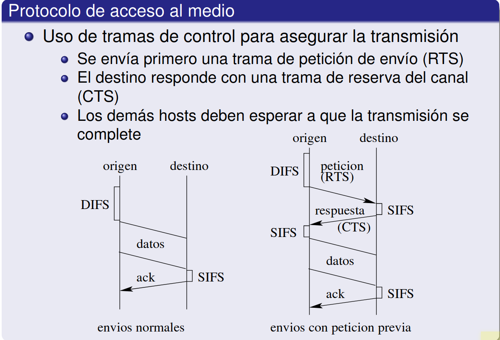
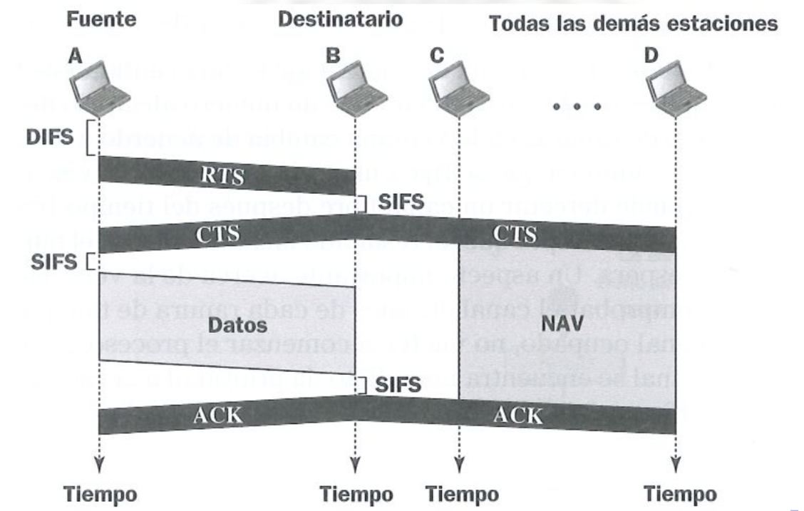
5.9.4 Ejemplo Práctico
Supón que tienes un router Wi-Fi en casa y dispositivos como una ordenador y un móvil:
-
El móvil quiere enviar datos:
- Verifica si el canal está libre. Si lo está, envía los datos tras el intervalo DIFS.
- Si el canal está ocupado, espera y reintenta según el algoritmo de backoff.
-
El router confirma la recepción:
- Responde con un ACK si recibió los datos correctamente.
- Si el móvil no recibe el ACK, reintenta.
-
Otros dispositivos respetan las tramas RTS/CTS:
- Si el móvil y el router están transmitiendo, los demás dispositivos en la red esperan hasta que acaben.
5.10 Redes ATM
Es un tipo de red con el que trabajan las compañías telefónicas. Fue diseñada para operar a alta velocidad. Pueden transmitir datos, voz y video. Los conmutadores pueden operar a velocidades de terabit por segundo. El modelo ATM cubre las tres capas inferiores:
- Capa física
- Capa de enlace
- Capa de red
Se integra en la arquitectura TCP/IP. Se usaba en redes telefónicasy en las troncales de Internet.
5.10.1 Tipos de servicio en ATM
CBR (Constant Bit Rate): Se reserva y garantiza una cierta tasa de transmisión. Los retardos y las pérdidas están bajo ciertos límites garantizados. Adecuado para transmitir audio y vídeo.
ABR (Available Bit Rate): La tasa de transmisión varía según los recursos disponibles, pero se garantiza un mínimo. NO se garantiza un mínimo en las pérdidas o el retardo.
UBR (Unspecified Bit Rate): Solo se transmiten paquetes cuando el resto de los servicios dejan recursos libres.
VBR (Variable Bit Rate): Se usa para aplicaciones en tiempo real (VBR-rt) o no en tiempo real (VBR-nrt).
5.10.2 Características de las redes ATM
Paquetes muy pequeños y sencillos (celdas) para garantizar su conmutación a altas velocidades. Tamaño de celda de 53 bytes (5 de cabecera y 48 de datos).
Red de circuitos virtuales orientada a conexión. Antes de la transmisión, hay una solicitud de conexión. Se planifica la ruta. Las celdas llevan el número de canal virtual. El conmutador ATM consulta la tabla de canales virtuales y selecciona la línea de salida. Todas las celda siguen el mismo camino y llegan en orden. Al finalizar hay una fase de desconexión donde se elimina los canales virtuales.
No hay ACKs ni retransmisiones, pero las celdas tienen control de errores de la cabecera
5.10.3 Capas de ATM
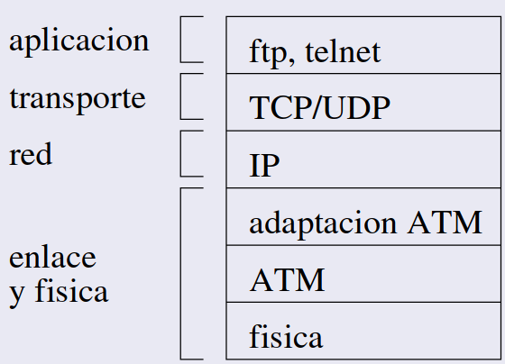
ATM puede funcionar sobre cualquier capa física. La capa de adaptación a ATM (AAL) permite que otros protocolos usen las red ATM. Diferentes AAL dependiendo del tipo de servicio:
- TCP/IP: Los datagramas se fragmentan para que quepan en las celas y se reensamblan a la salida.
- Audio y vídeo: se agrupan los datos hasta llenar una celda.
5.10.4 Identificación de circuitos virtuales**
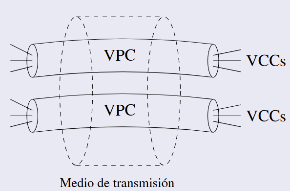
En ATM hay dos niveles de conexión:
- VCC(Virtual Channel Connection): Canal virtual.
- VPC(Virtual Patch Connection): Camino virtual.
- Conjunto de VCCs con los mismos extremos.
- Facilitan la gestión de los VCCs.
El identificador de circuito virtual permite distinguir entre caminos virtuales, y dentro de cada camino virtual entre canales.
5.10.5 Estructura de las celdas ATM
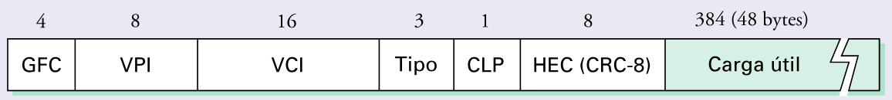
Dos formatos:
- Interfaz usuario-red
- Interfaz red-red
Control de Flujo Genérico (GFC): solo en las interfaz usuario-red para la QoS. Identificador de canal virtual: VPI y VCI Tipo de carga útil: si la celda es de datos o de control Bit de prioridad: de la celda (CLP) Byte de control de error de la cabecera.
5.10.6 Ejemplo práctico de ATM
Imagina que un proveedor de servicios de Internet (ISP) usa ATM para transmitir tráfico de red:
- Un cliente envía datos desde su casa.
- El ISP utiliza ATM para dividir esos datos en celdas pequeñas (53 bytes) y las envía a través de su red troncal.
- Las celdas siguen un circuito virtual preestablecido, identificado por VPI y VCI.
- Cuando llegan al destino, las celdas se reensamblan para reconstruir los datos originales.